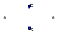

Table of Contents
- User's Guide
- Blocks
- Conditions
- Assemblies
- Regions
- Subregions
- Connectors
- Characteristics
- Units
- Quantities
- BaseClasses
Download
- Latest version (**Empty; please check back soon or contact kdavies4 at gmail.com.)

| Name | Description |
|---|---|
| Empty condition for a phase (no species) |
 FCSys.Conditions.ByConnector.FaceBus.Pair.Phases.BaseClasses.EmptyPhase
FCSys.Conditions.ByConnector.FaceBus.Pair.Phases.BaseClasses.EmptyPhase
| Type | Name | Description |
|---|---|---|
| FaceBus | negative | Negative-side multi-species connector for material, momentum, and energy |
| FaceBus | positive | Positive-side multi-species connector for material, momentum, and energy |
| RealInputBus | u | Input bus for values of specified conditions |
| RealOutputBus | y | Output bus of measurements |
model EmptyPhase "Empty condition for a phase (no species)" extends FCSys.BaseClasses.Icons.Conditions.Pair; Connectors.FaceBus negative "Negative-side multi-species connector for material, momentum, and energy"; Connectors.FaceBus positive "Positive-side multi-species connector for material, momentum, and energy"; Connectors.RealInputBus u "Input bus for values of specified conditions"; Connectors.RealOutputBus y "Output bus of measurements"; end EmptyPhase;